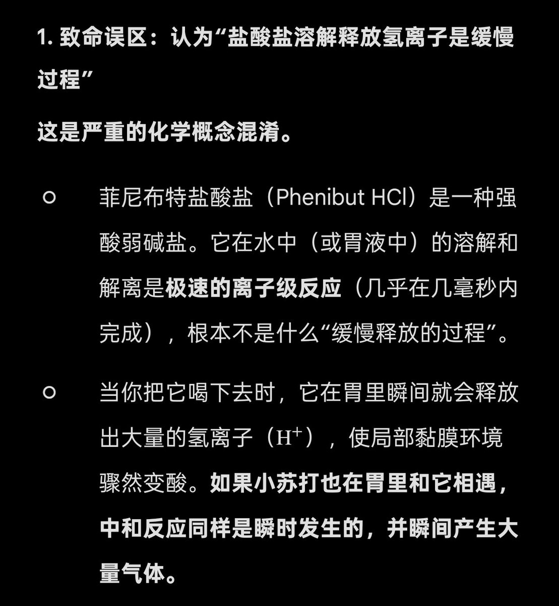
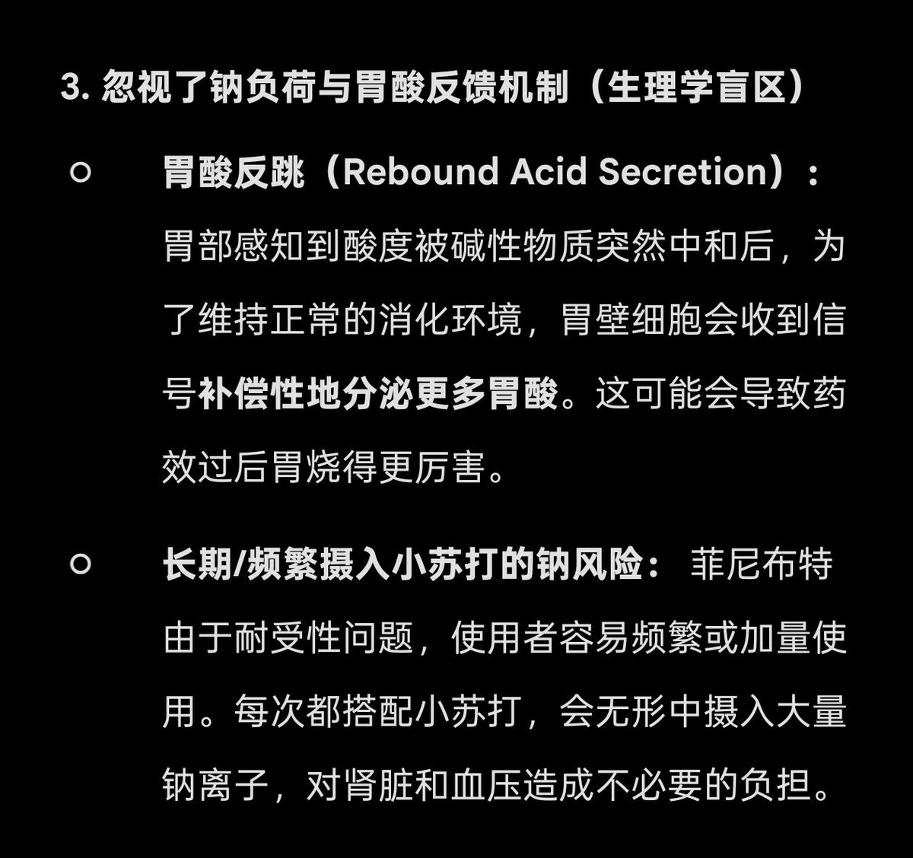

超级伊伊伊万#忒伊亚
@ivan20221126
😹😹，这个。绯妮佈忒！很，好玩？搭配苏打粉！ 高钠血症，


沐雨
@drug_artist2
@S1nw0w 别拿试管里的反应硬套活人胃部
胃是开放体系 反应产生的二氧化碳可以嗳气排出
盐酸盐溶解释放氢离子是缓慢过程，不会瞬时集中剧烈反应😅
小苏打造成胃穿孔都是一次性干服大量粉末、本身有胃溃疡的极端案例，不能无限扩大风险
适量温水溶解后使用，可以中和药物解离的氢离子 从而减轻胃部刺激